Немного о деньгах в древнем мире

Деньгами в древнем мире становились наиболее важные предметы потребления. У многих народов роль денег играл скот. Латинское название денег - pecunia - происходит от pecus - скот, как и русское слово товар - от тюркского слова, означающего "скот". Гомер, говоря о некоторых видах оружия, оценивал их в быках. На территории современной Германии в I тыс. до н.э. имелись так называемые "коровьи деньги". У северных народов денежной единицей служил олень. У других народностей деньгами являлись сахар, слоновая кость, меха, опиум, какао, и т.д. Особенно известны в качестве денег раковины каури (cowry) или Cyprala moneta (змеиная головка) - беловатая раковинка 2-3 см длиной, добываемая в Индийском океане вывозимая в Индию, Цейлон, Африку. В древности она расходилась далеко: ее находили в скифских и русских погребальных курганах, в погребальных урнах северной Германии, в Англии, Швеции, в развалинах Ниневии. У североамериканских индейцев из раковин вырезали циллиндрики, нанизываемые на нитку, и называлось это вампун (wampon). Пояса с многочисленными нитками с нанизанными на них разноцветными циллиндриками так, что получались изображения птиц, зверей, составляли сокровища. Другие народы (в основном северные) в качестве денег использовали ценные шкурки (Северная Америка, Аляска, Сибирь), и долгое время на Руси (шкурка белки составляла копейку, сто шкурок - рубль).
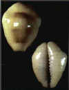
В древнейших списках "Русской Правды" встречаются упоминания о штрафах скотом. Существовала даже должность - "скотник", т.е. человек, взимающий подати. В другое время роль денег выполнял мех куницы, также многократно упоминаемый в "Русской Правде". Встречающиеся в "Русской Правде" куны, резаны, векши и бели означают, по-видимому, уже металлические деньги, к которым перешли названия некоторых мехов.
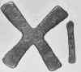 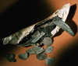 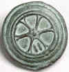
В некоторых странах деньгами служили продукты, получаемые от возделываемых культур. Так в Древней Мексике, Никарагуа, Гондурасе в качестве мелких денег употреблялись бобы какао. В некоторых областях Перу и Боливии ту же роль играл перец, в других областях Америки - листья табака, в Монголии - кирпичный (прессованный) чай. У многих народов единицей ценности и платежа был раб: тропическая Африка, Новая Гвинея, Древняя Русь.
В качестве "денег" использовались копья, собачьи зубы, куски известняка на Каролинских островах (глыбы диаметром до 2 м) и даже свиные хвостики. Связки свиных хвостиков достигали иногда 12 м. На острове Яп были женские и мужские деньги. Женщины использовали браслеты из раковин, мужчины каменные жернова. В Древнем Риме с наёмными воинами расплачивались мешочками соли, и появившиеся позднее монеты назвали solidus (от этого слова - ит. soldo "название монеты" → soldato "солдат"). Древние индоевропейцы на своем пути из Индии в Европу в роли денег использовали медные топоры и треножники. В архаическую эпоху в Элладе в торговых операциях стали использоваться железные слитки в виде прутьев. В древнейших государствах - Месопотамии и Египте - пользовались слитками металла как посредниками при обмене. Иногда эти металлические деньги делали в форме кольца, полукольца, бруска. У славян известны "монеты" в виде топориков, у древних китайцев - в виде миниатюрных бронзовых мотыг, ножей или колокольчиков. У многих народов Юго-Восточной Азии до недавнего времени средством платежа являлись чай, соль и даже свертки табака. Особой популярностью на рынках островов Индийского океана и на берегах Западной Африки пользовались раковины каури, известные и в эпоху Средневековья на Руси и в Балтии. Индейцы Америки использовали при обменных операциях зерна какао. Конкистадоры в XVI в. вначале получали золото индейцев в обмен на нитки стеклянных бусин. Вплоть до XVIII в. европейцы, посещавшие Индонезию и Филиппины, вели обмен с островитянами при помощи зерен перца и прочих пряностей. На некоторых островах Океании и сейчас вместо денег применяются бронзовые пушки, съедобные ласточкины гнёзда, браслеты, раковины, большие круглые камни (до 4 метров в диаметре и весом до 1 тонны), зубы животных, перья попугая и т.д.
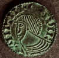 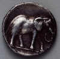 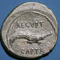 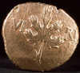
Властители малоазийского государства Лидия в V в. до н.э. совершили настоящий переворот в истории денег: средства платежа приняли самую удобную форму - круглую. Это были монеты из электра - сплава серебра и золота. Круглая форма имеет технологическое происхождение: так было удобней чеканить маленькие золотые слитки, на которые наносились титулы правителей, изображения, указывающие на происхождение и номинал монеты. Очень скоро от примитивной техники чеканки лидийских и эгинских монет перешли к более совершенной: монетный кружок, который получали обычно литьем, клали между двумя цилиндрическими или квадратными в сечении штемпелями - нижний закреплен был в наковальне, а по верхнему ударяли молотком. Изображения богов на монетах являлись их мистической охраной, в том числе и от фальшивомонетчиков. Подделывались даже такие архаичные формы платежа, как серебряные слитки-гривны.
Дионисий I, тиран Сиракуз, в начале IV в. до н.э. под страхом смерти заставил жителей принести и сдать в казну всю имеющуюся у них монету. Затем он распорядился перечеканить ее. Новые драхмы были объявлены равными двум старым - именно так и расплатились с жителями. И жители ушли, унося фактически только половину сбережений. В одном из среднеазиатских кладов медных монет встречаются монеты, надпись на которых говорит: "перед тобой дирхемы", т.е. серебряные монеты. Оказывается, медные монеты серебрились, на них писали слово "дирхем", и они выпускались на рынок как серебряные монеты. Фактически они ничего не стоили, но хорезмшах и его казна расплачивались ими как серебряными. Население конечно знало, что монеты обманные, но должно было их принимать и употреблять в торговле как настоящие серебряные деньги. Отказаться от приема таких денег никто не мог. Так из столетия в столетие "портились" монеты. Они уменьшались в весе, в серебро и золото добавлялись дешевые металлы - лигатура.
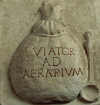 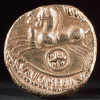 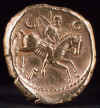 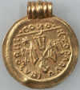
В Древней Греции за подделку монет могли изгнать или даже казнить. В Древнем Риме наказание зависело от положения преступника: знатного ссылали, простолюдина казнили, раба распинали на кресте. История Диогена Синопского (ум. ок. 330-320 до н.э.) в изложении Диогена Лаэртского начинается с легенды о причастности отца Диогена, менялы Гикесия, и самого киника к "порче монет": "И сам Диоген в сочинении "Барс" признает, что он обрезывал монеты. Некоторые рассказывают, что его склонили на это работники, когда он был назначен заведовать чеканкой, и что он, отправившись в Дельфы или в делийский храм на родине Аполлона, спросил, сделать ли ему то, что ему предлагают. Оракул посоветовал ему: "сделать переоценку ценностей" [греч. слово νόμισμα означает "ходячую монету" и "общественное установление"], а он не понял истинного смысла, стал подделывать монету, был уличен и, по мнению одних, приговорен к изгнанию, по мнению других, бежал сам в страхе перед наказанием. Некоторые сообщают, что он получал деньги от отца и портил их и что отец его умер в тюрьме, а сам он бежал, явился в Дельфы и спросил оракула не о том, заниматься ли ему порчей монеты, а о том, что ему сделать, чтобы прославиться: тут-то он и получил ответ, о котором было сказано" (VI 2 20).
Уже в Древней Греции на рынке в обороте находились монеты десятков городов, множества видов. Одни из них были более полновесны, тяжелее, другие легче. Монета одного города стоила несколько монет другого, так как эти последние могли быть сделаны не из чистого золота, а из сплава золота и серебра. Монеты с одной эмблемой пользовались преимуществом, и их авторитет был высок, доверие к клейму их монетного двора непоколебимо. Такова, например, афинская драхма.
Очень редко, но все же встречаются монеты, выпущенные не государством, а от имени храма или отдельного лица. В ХVI - XVII вв. в Англии, Северной Америке, Канаде чеканилась частная монета. Например, банкир Бэтсрел, живший в XIX в., изготовил в своих мастерских в Сесарфордтоне (Сев. Каролина) монет на 11 млн. франков золотом. На монетах были обозначены их вес и имя и местожительство банкира. Но эти частные деньги сравнительно редки.
Немецкое слово Geld "деньги" имеет в основе древнегерманское gelten — "платить, возмещать в виде жертвоприношения". Такой платой был скот, каменные орудия, затем, в эпоху обработки металлов, — бронзовые таганы, чаши, топоры, кольца, обручи, украшения из золота, жемчуга и т.д. В общении с богами человек выступил как субъект экономических отношений. Большинство монет получило свои названия от весов и гирь. Латинское слово libra означает весы, "либра" - весовая единица у римлян. Это название перешло к византийцам ("литра") и к итальянцам ("лира"), а затем и ко многим другим европейским народам. Гривна когда-то была весовой величиной, но с течением времени стала только денежным понятием и превратилась в конце концов в гривенник, т.е. десять копеек. Английский фунт стерлингов означал фунт серебра (libra). Потому фунты стерлингов обозначают буквой L. В XVI в. в Чехии были большие серебряные рудники, которые давали сырье для денежного дела. Эти рудники были расположены в долине Иоахима (Ioachimsthal). Монеты из этого серебра получили название Ioachimsthaler, а от них произошло сокращенное thaler (талер).От слова "талер" произошло название американского доллара.
В архаических обществах не установлен обмен имущества, богатства и продуктов в форме рыночной торговли между индивидами. Сначала договариваются коллективы - кланы, племена, семьи. Более того, то, чем они обмениваются, состоит отнюдь не только из богатств и вещей. Это прежде всего знаки внимания, пиры, ритуалы, военные услуги, женщины, дети, ярмарки, из которых рынок и циркуляция богатств - лишь одно из отношений гораздо более широкого договора. Наконец, взаимные дары осуществляются добровольно, хотя на самом деле они строго обязательны, уклонение от них грозит войной. Ритуал взаимного одаривания, называемый индейцами Северозападной Америки потлач, детально описан Марселем Моссом в его работе "Очерк о даре. Форма и основание обмена в архаических обществах"
По материалам сайта : http://www.ec-dejavu.net/